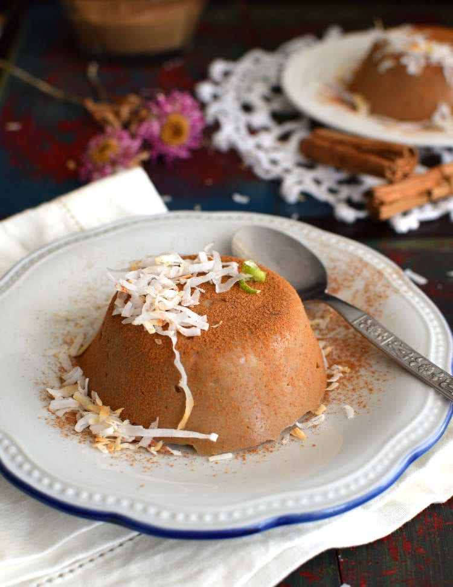
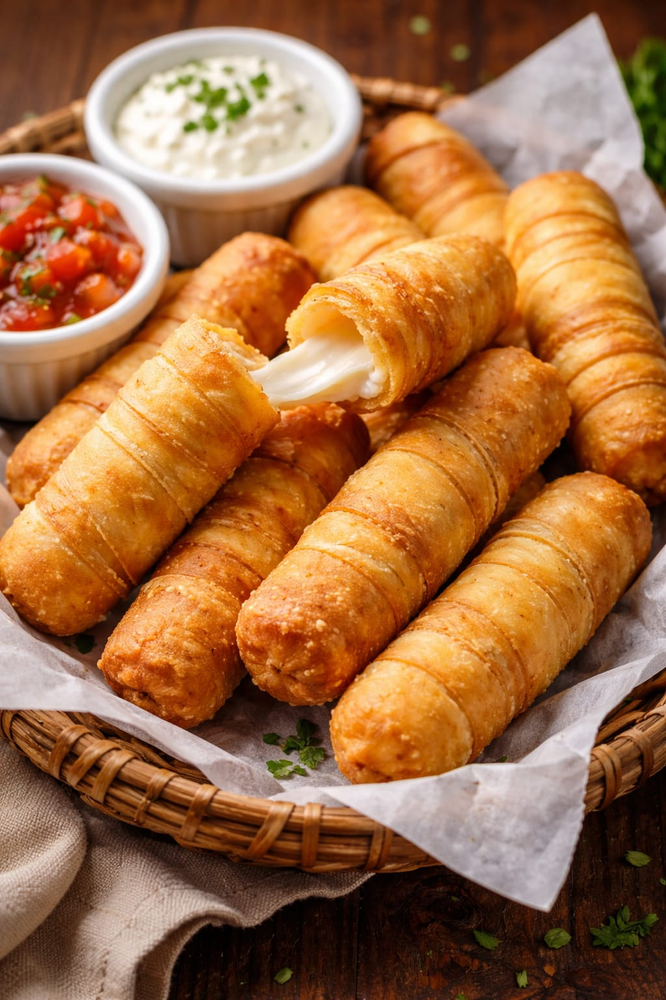

Recetarios | La Dulceria de Nelly

QUESILLO
El Quesillo venezolano es un postre tradicional, similar a un flan pero más denso y cremoso, caracterizado por su textura porosa y cobertura de caramelo dorado. Se elabora horneando a baño María una mezcla de leche condensada, huevos, leche líquida, vainilla y a veces ron, sin contener queso real. Es el dulce icónico de las celebraciones en Venezuela.
Ingredientes
5-6 huevos, 1 lata leche condensada (397 g), 1 lata leche. La misma de la leche condensada, 1 chorrito esencia de vainilla, 1 chorrito ron (Opcional).
Caramelo
6 cucharadas azúcar.
Paso a paso
1- En una olla a fuego medio, agregamos el azúcar y esperamos que se derrita por completo. Luego lo pasamos al molde y lo untamos por todas las paredes con cuidado.
2- Mientras se enfría el caramelo en el molde, agregamos todos los ingredientes en una licuadora y mezclamos por un minuto. Luego, agregamos la mezcla al molde y tapamos. Yo utilicé estos moldecitos y salieron 3 quesillos y tapé los moldes con papel aluminio..
3- En una olla grande (donde quepa bien el molde), agregamos agua que quede a la mitad del molde (una vez que hierva el agua, bajamos el fuego) y tapamos por una hora.
4- Pasada una hora, sacamos el molde con cuidado y para saber que está listo, pinchamos con un palillo; este debería salir limpio. Esperamos que el molde este tibio, despegamos el quesillo de todas las paredes y volteamos en un plato para luego dejarlo en la nevera unas cuatro horas o preferiblemente dejarlo hasta el día siguiente.

CACHITOS
Es un panecillo suave y esponjoso, con forma de medialuna o croissant, tradicionalmente relleno de jamón ahumado picadito, que funciona como uno de los desayunos o meriendas más icónicos y populares del país. Se caracteriza por su masa enriquecida y su característico sabor dulce-salado, siendo un alimento indispensable en las panaderías.
Ingredientes
300 gr harina 000,2 huevos, 100 cc leche tibia, 1 cda sopera de manteca pomada, 10 gr levadura, 20 gr azúcar, 200 gr jamón(yo usé salchichón primavera), 2 cditas sal.
Paso a paso
1- Disolver la levadura en la leche tibia junto con el azúcar, mezclar y dejar reposar por 10min.
2- Aparte, en un bol mezclar los huevos y la manteca pomada, hasta obtener una mezcla homogénea. En otro bol o sobre la mesada colocar la harina con la pizca de sal, hacer un huequito en el centro y agregar allí la levadura activada y la mezcla de huevo realizada anteriormente, empezar a revolver de a poco hasta obtener una masa homogénea, si es necesario añadir más harina. Amasar durante 15 minutos hasta conseguir una masa suave y elástica.
3- Dejar descansar la masa en un lugar cálido, durante 1 hora o hasta que doble su volumen. Transcurrido este tiempo, en una superficie enharinada estirar la masa y cortar triángulos(como para hacer medias lunas) Agregar en el centro de cada triángulo el jamón cortado finito y pincelar los bordes con un poco de agua o leche, hacer un rollito desde el borde más grande hasta la punta.
4- Colocarlos en una bandeja enmantecada y enharinada, dejar letdar por 30min. Pincelarlos con huevo batido o leche y llevar a horno moderado precalentado durante 15 minutos aproximadamente o hasta que estén doraditos.
5- También quedarían muy ricos con queso

MAJARETE
Es un postre tradicional venezolano, típico de la época de Semana Santa, consistente en un pudín cremoso de coco y maíz (harina o maíz tierno) con una textura similar al flan. Se caracteriza por su intenso sabor a coco, endulzado con papelón (panela) y especiado con canela en rama y clavo de olor, servido frío con canela en polvo por encima.
Ingredientes
500 gr harina de maíz precocida, 2 latas (400 gr) c/u de leche de coco, 1/2 lata leche condensada, 1 astilla de canela, 1/2 lata leche líquida, 300 gr azúcar mascabo con Canela molida
Paso a paso
1- En una olla colocar las leches, azúcar mascabo y la astilla de canela dejar hervir hasta que se disuelva el azúcar y cambie un poco de color.
2- Luego de esto poner fuego mínimo retirar la canela y agregar en forma de lluvia la harina de maíz y con cuchara de madera batir enérgicamente por día minutos.
3- Servir en caliente en platos hondos espolvorear con canela molida dejar enfriar bien y a disfrutar.

TEQUEÑOS
es el pasapalo (aperitivo) más emblemático de Venezuela: un bastón de queso blanco semiduro envuelto en una masa de harina de trigo, frito hasta quedar crujiente y dorado. Es fundamental en fiestas y celebraciones, originado en Los Teques, estado Miranda, y popularizado desde la década de 1960.
Ingredientes
320 g Queso Provoleta (O llanero si conseguís), C/n Aceite para freír
Para la masa
500 g Harina 0000, 125 ml Agua tibia, 10 g Sal, 125 ml Leche, 35 g Azúcar, 15 ml Aceite
Paso a paso
1- Para la masa, vamos a calentar los líquidos (Sin llegar a hervir, deben estar tibios). En la mesada, armamos una corona con los secos.
2- Vertemos los líquidos en el centro y unimos hasta obtener una masa suave y homogénea. La dejamos descansar tapada 30 min.
3- Mientras, cortamos bastones de queso del tamaño y grosor deseado.
4-Estiramos la masa y cortamos tiras largas de 1 cm de ancho.
5- Para enrollarlos, comenzamos desde la punta y envolvemos verticalmente, luego comenzamos a enrollar la pieza con la masa. (Sugerencia, ir estirando con las manos la masa mientras enrollamos el tequeño).
6- Para que queden bien sellados, aplastar las puntas contra la mesada y luego los laterales haciendo rodar el tequeño sobre la mesada.
7- Se recomienda guardarlos un rato en la heladera antes de freír, aún que podes hacerlos directamente si estás muy tentado.
8- Freír hasta que estén dorados. Y disfrutar.